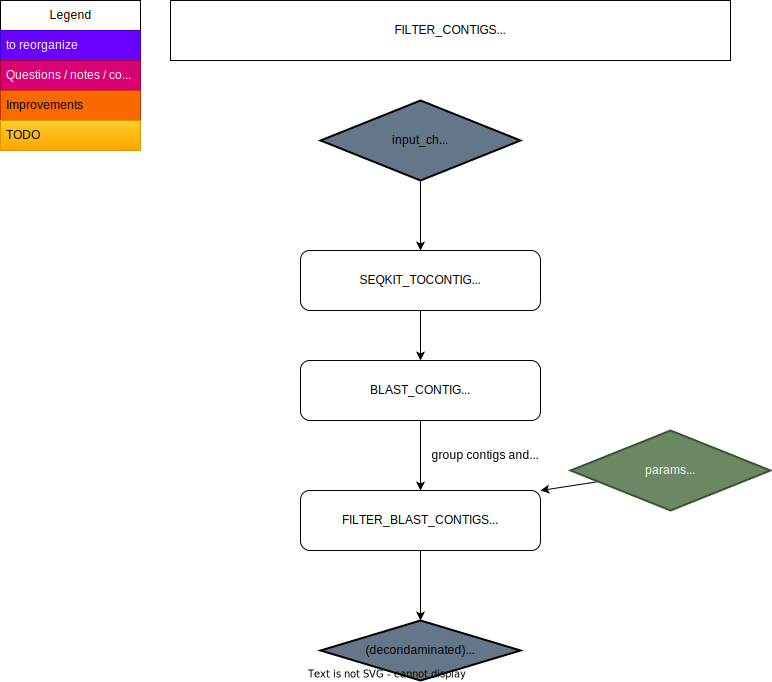
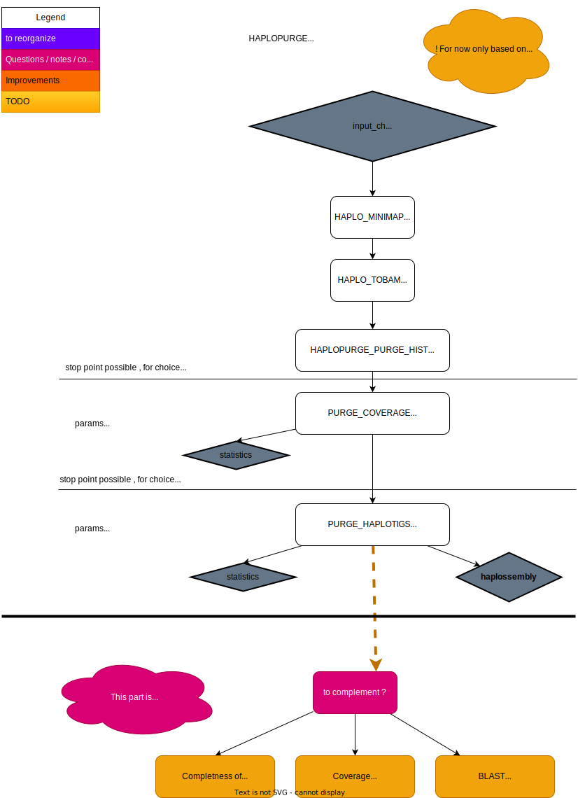

2 DIPLOTOPIA pipeline and program descriptions
2.1 Overview
2.2 Track descriptions
2.2.1 PURELY_RAW: Cleaning raw reads from eventual contaminants (STATUS: DEV)
Pre-assembly. Detection and filtering out (optional) of contaminated reads, prior to assembly.
2.2.2 TRYSSEMBLY: Testing different assembly methods (STATUS: DEV)
Trial of different assemblers to obtain a suitable assembly for your purposes.
As per today, assemblies are a model of an organisms’ genome, not the truth! Testing different assemblies methods (or assemblers) might serve your purpose. Indeed, some assemblers will perform better with some organisms, while some better is other organisms. Moreover, depending on what is the ultimate goal for you to do an assembly (eg. syntheny comparison of organisms belonging to the same species, copy number variation, variant calling ….) then some methods might serve your ultimate goal better than others.
As it is difficult to predict what will work best (at least for me), then it might be usefull to try different methods rapidely. Here is a track that aims to give you some assembly options.
(Note that this track is expected to growth …. when the need arise).
Currently the methods we are using here are:
- NECAT : from NECAT assembler specialized for long reads (nanopore), NECAT ARTICLE and NECAT TOOL repository
- MASURCA : from MASURCA genome assembler, an hybrid assembler, MASURCA FIRST ARTICLE, MASURCA HYBRID ARTICLE and MASURCA TOOL repository
2.2.3 FILTER_CONTIGS (STATUS: FUNCTIONAL)
Optional track. Filters out contigs/scaffolds from assemblies, when those are not detected as belonging to a “positive” filtering criteria (eg. organism of interest). Employed for removal of contaminated contigs from assemblies. Main output: decontaminated asembly sequence

This track uses seqkit software to split assemblies into the set of contigs for each sample, allowing high parallelization of the [blastn] taxonomical comparison of each contig. Blastn is used to detect a maximum of 5 matches and to provide the taxonomical identification of those matches.
The blastn taxonomical results are then collated and used to filter out likely contaminant contig using the R-quarto script diplotopia/bin/contigs_taxo_overview_filter.qmd.
A “positive filter” expression (rlang) is provided by the user. Any taxonomy that is not reflected within the positive filter will be considered as contaminant. We aimed to make the choice of this expression as flexible as possible. It is eg. possible to use an expression composed of several taxonomic ranks, ensuring that we can fine tune the filtering step to obtain a “decontaminated” assembly.
See Filtering contigs explanations for more details about the filtering process strategy.
See also [Installation##Obtain_necessary_external databases], as this track require database/files to be pre-downloaded.
References - SEQKIT article - BLAST article - R - Quarto
Repositories - SEQKIT repository
Manuals and other resources - NCBI Blast help
2.2.4 COMPASS: Comparing assemblies (STATUS: FUNCTIONAL)
Assembly comparison and evaluation - a guide to choice which assembly to use for further analyses
This track aims to provide statistical information allowing to compare assemblies, in order to be able to make informed choice about which assembly you will use for the rest of your analyses, this depending of your purpose / criteria.

The tracks provide statistical information (main output) about: - coverage (base coverage : deeph) (QUALIMAP) with results summarized with (MULITQC) - contiguity and coverage genome (relative to a given reference genome, which can be either one assembly you select or an external assembly, or both) - In some cases it can detect missassemblies, dependent of the reference genome used (QUAST) - completeness (BUSCO): it is possible to use one or several sets of markers. > Eg. if no specific marker are developed for the lineage that is your object of interest, you can chose to use markers from several lineages for the comparison, and see which will provide the most informative completness informaiton.
A summary table for completness (BUSCO) is generated using a R-quarto script (see diplotopia/bin/busco_summary.qmd) at the end of the track.
Note that it is also possible to run FILTER_CONTIGS track in COMPASS, this is for convenience during rerun, and when you are sure you have defined your filtering expression correctly.
Eventual contamination of the assemblies is checked using a kmer approach (KRAKEN2). Note that this information is purely indicative (and a deviation of normal KRAKEN2 usage). Moreover if the organism that you are interested in in NOT included in the kraken database that is used, this will most certainly report erroneous taxon content.
See also [Installation##Obtain_necessary_external databases], as this track require a kraken database to be either downloaded or created specifically for your analysis.
References
- BUSCO article
- QUAST article
- QUALIMAP article
- MULTIQC article
- SAMTOOLS article
- MINIMAP article
- BWA-MEM article
- KRAKEN2 article
Repositories
- QUAST repository
- QUALIMAP repository
- BUSCO repository
- MULTIQC repository
- SAMTOOLS repository
- MINIMAP repository
- BWA repository
- KRAKEN2 repository
Manuals and other resources
2.2.5 HAPLOPURGE (STATUS: FUNCTIONAL)
From assembly to haploid assembly - retaining the haploid genome for variant calling
! Currently only for long reads
The purpose of this track is to clean the chosen assembly to optain an haploid representation of the genome of a diploid organism. Ie, we aim to optain an haploid representation of the genome of a diploid organism. This haploid representation (HaploSSembly) will then be used to call variants (or any other aim where it fits) of diploid organisms, allow allowing to determine the genotype at each haploid locus. Main output: HaploSSembly (Haploid Assembly)
The original assembly, provided as input, is inspected for eventual chimera/missassembly contigs, junk (potential low copy number contaminants), repeats and haplotigs using purge haplotigs software.

First, reads are mapped (using MINIMAP) to the (decontaminated) assembly . Purge Haplotigs software allows to draw an histogram that allows to evaluate the coverage of the haploid and diploid parts of the genome, which allows to determine three coverage thresholds low, mid (between the haploid and diploid pics) and high that Purge Haploitigs software will further used to attemps to classify contigs as haploid VS diploid, poliploid (eg. small repeats) or chimeric/artificial contigs, this on the basis of the proportion of haploid and diploid coverage for each contig.
Based on this classification, haplotigs and other ambiguous contigs are discared from the original input assembly.
See also HAPLOPURGE choices
References
Repositories - Purge haplotigs repository - MINIMAP repository
Manuals and other resources
2.2.6 Variant calling tracks
2.2.6.1 VARWRRUM: Variants At Regions Where Reference Reads Uniquely Map (STATUS: FUNCTIONAL)
Variant calling - halpoid reference, diploid genome.
This track prepares the reference (an HaploSSembly / haploid genome assembly) and samples for variant calling. Then it does statistical variant calling (using FreeBayes software), does variant filtering and variant normalisation of called variants; this for each sample individually but also for all samples considered as a single population.
Main output: normalised vcf file

The detailed track descriptions is provided here. In short, the reference is softmasked, at least for low complexity regions, the reads of each sample (diploid) are mapped to it, and variants are called for each sample and globaly as a population, using solely reads that are uniquely mapped, this with Freebayes software. Variants are filtered, ensuring that solely variants of good quality are retained, and normalised, which allow to compare position of the call between samples.
We implemented different statistics calculation (coverage, presence of mapping tags) at the different stages (pre, during, and after) variant calling and filtering.
As mentioned in FREEBAYES repository, > “Users are encouraged to examine their output and both variants which are retained and those they filter out”.
We certainly encourage this practice, as this will allow to adjust filtering criteria, and might also hint about improvement to be gained at the reads mapping filtering and/or assembly masking stages.
References - Trim Galore citat - BWA-MEM article - SAMTOOLS article - SEQKIT article - BBTools/BBmask article - VT article - FREEBAYES article - purge haplotigs article - BCFtools article
Repositories - Trim Galore repository - BWA repository - SAMTOOLS website - SEQKIT repository - BBTools/BBmask website - VT repository - FREEBAYES repository - purge haplotigs repository - BCFTools repository
Manuals and other resources - SAMTOOLS manual - BCFTools manual - VT documentation
2.3 #### FunGen
Origin of the track (ref)
2.4 References
Bushnell, Brian, Jonathan Rood, and Esther Singer. “BBMerge – Accurate Paired Shotgun Read Merging via Overlap.” PLOS ONE 12, no. 10 (October 26, 2017): e0185056. https://doi.org/10.1371/journal.pone.0185056.
Camacho, Christiam, George Coulouris, Vahram Avagyan, Ning Ma, Jason Papadopoulos, Kevin Bealer, and Thomas L. Madden. “BLAST+: Architecture and Applications.” BMC Bioinformatics 10 (December 15, 2009): 421. https://doi.org/10.1186/1471-2105-10-421.
Danecek, Petr, James K Bonfield, Jennifer Liddle, John Marshall, Valeriu Ohan, Martin O Pollard, Andrew Whitwham, et al. “Twelve Years of SAMtools and BCFtools.” GigaScience 10, no. 2 (February 1, 2021): giab008. https://doi.org/10.1093/gigascience/giab008.
Ewels, Philip, Måns Magnusson, Sverker Lundin, and Max Käller. “MultiQC: Summarize Analysis Results for Multiple Tools and Samples in a Single Report.” Bioinformatics 32, no. 19 (October 1, 2016): 3047–48. https://doi.org/10.1093/bioinformatics/btw354.
García-Alcalde, Fernando, Konstantin Okonechnikov, José Carbonell, Luis M. Cruz, Stefan Götz, Sonia Tarazona, Joaquín Dopazo, Thomas F. Meyer, and Ana Conesa. “Qualimap: Evaluating next-Generation Sequencing Alignment Data.” Bioinformatics 28, no. 20 (October 15, 2012): 2678–79. https://doi.org/10.1093/bioinformatics/bts503.
Gurevich, Alexey, Vladislav Saveliev, Nikolay Vyahhi, and Glenn Tesler. “QUAST: Quality Assessment Tool for Genome Assemblies.” Bioinformatics 29, no. 8 (April 15, 2013): 1072–75. https://doi.org/10.1093/bioinformatics/btt086.
Krueger, Felix, Frankie James, Phil Ewels, Ebrahim Afyounian, and Benjamin Schuster-Boeckler. “FelixKrueger/TrimGalore: V0.6.7 - DOI via Zenodo.” Zenodo, July 23, 2021. https://doi.org/10.5281/zenodo.5127899.
Li, Heng. “A Statistical Framework for SNP Calling, Mutation Discovery, Association Mapping and Population Genetical Parameter Estimation from Sequencing Data.” Bioinformatics 27, no. 21 (November 1, 2011): 2987–93. https://doi.org/10.1093/bioinformatics/btr509.
“Aligning Sequence Reads, Clone Sequences and Assembly Contigs with BWA-MEM.” arXiv, May 26, 2013. https://doi.org/10.48550/arXiv.1303.3997.
“Minimap2: Pairwise Alignment for Nucleotide Sequences.” Bioinformatics 34, no. 18 (September 15, 2018): 3094–3100. https://doi.org/10.1093/bioinformatics/bty191.
Quarto. “Quarto.” Accessed July 30, 2024. https://quarto.org/.
“R Core Team (2024). R: A Language and Environment for Statistical Computing. R Foundation for Statistical Computing, Vienna, Austria. URL Https://Www.R-Project.Org/,” n.d.
Roach, Michael J., Simon A. Schmidt, and Anthony R. Borneman. “Purge Haplotigs: Allelic Contig Reassignment for Third-Gen Diploid Genome Assemblies.” BMC Bioinformatics 19, no. 1 (November 29, 2018): 460. https://doi.org/10.1186/s12859-018-2485-7.
Shen, Wei, Shuai Le, Yan Li, and Fuquan Hu. “SeqKit: A Cross-Platform and Ultrafast Toolkit for FASTA/Q File Manipulation.” PLOS ONE 11, no. 10 (October 5, 2016): e0163962. https://doi.org/10.1371/journal.pone.0163962.
“SeqKit: A Cross-Platform and Ultrafast Toolkit for FASTA/Q File Manipulation.” PLOS ONE 11, no. 10 (October 5, 2016): e0163962. https://doi.org/10.1371/journal.pone.0163962.
Simão, Felipe A., Robert M. Waterhouse, Panagiotis Ioannidis, Evgenia V. Kriventseva, and Evgeny M. Zdobnov. “BUSCO: Assessing Genome Assembly and Annotation Completeness with Single-Copy Orthologs.” Bioinformatics 31, no. 19 (October 1, 2015): 3210–12. https://doi.org/10.1093/bioinformatics/btv351.
Tan, Adrian, Gonçalo R. Abecasis, and Hyun Min Kang. “Unified Representation of Genetic Variants.” Bioinformatics 31, no. 13 (July 1, 2015): 2202–4. https://doi.org/10.1093/bioinformatics/btv112.
Wood, Derrick E., Jennifer Lu, and Ben Langmead. “Improved Metagenomic Analysis with Kraken 2.” Genome Biology 20, no. 1 (November 28, 2019): 257. https://doi.org/10.1186/s13059-019-1891-0.